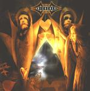

Home Artist links

Ricocher - Quest For The Heartland
| Artist: | Ricocher |
| Title: | Quest For The Heartland |
| Label: | self produced |
| Length(s): | 22 minutes |
| Year(s) of release: | 2000 |
| Month of review: | [07/2001] |
Line up
Erwin Boerenkamps - lead vocals, guitar
Bart van Helmond - guitars, backing vocals
John van Heugten - keyboards, backing vocals
Maikel van der Meer - drums, percussion
Niels Nijssen - bass, backing vocals
Tracks
| 1) | The Code | 5.11
|
| 2) | Life In Your Mind | 5.24
|
| 3) | Your Pride | 3.18
|
| 4) | Quest For The Heartland | 8.02
|
Summary
This young band is making a name for itself with appearances at "large"
live shows playing for a relatively large amount of people. Needless to say
I was interested to hear what the hubbub was about. Note that the name derives
from a Marillion song, but they did not look to see how it should have been
spelled.
The music
The first track is the two-parted The Code. The opening features some spoken
vocals. The music is not really complex yet: this is accessible melodic rock,
with quite emotive vocals. Although I did not really think much of it at
first listen, the first part is really quite nice with good melodies,
the vocals are not "beautiful", a bit too sharp for that. The patr with all
the breaks in the middle are supposed to lead us to the second part of the
track, but it all comes out rather unnatural. In a way I am reminded of
Marathon (also because of the vocals), but I think Marathon is still a bit
stronger songwise. The optimistic passage following it tells me the same
thing.
Life In Your Mind is more ballad like with a very strong dramatic chorus.
Melodic rock with a strong guitar solo right in the middle.
The second part is not that well articulated, something they should work on
and the drums could certainly be more dynamic. The final part is certainly not
the stronger one.
Your Pride is the first track on this mini album. After the Kelly like opening
the music becomes positively danceable with the same uplifting keyboard run
and rhythm guitars giving fire to the music. Catchy stuff and although very
straightforward, it is not bad.
The title track is also the longest. It opens moodily with piano.
Some attention must be paid to the lyrics (ironical?). A good vocal melody
on this song, slowly it gets underway, the pace never getting overly high. I
guess one could liken the music a bit to Pink Floyd, because of the strong
guitar playing. After a short keyboards intermezzo the vocals return.
A rather subtle track this one. Only in the last minute or so, does the music
win in power. Here the vocals are also a bit louder and sharper. A bit like
Everon here, but with a lower singing tempo. Again, the drums could be more
dynamic, more groovy. Something is lacking there.
Nice artwork by Matthias Norén.
Conclusion
Nothing new under the sun here. This is neo-progressive (or if you do not
care for the term: melodic rock) influenced by Marillion, For Absent Friends,
but mostly by the Dutch band Marathon. However, the band also shows aspects of
an own identity, and I expect these to grow in the future. Hence they are worth
keeping an eye on, an opinion which I did not think I would have after the first
listen. The band has a knack for turning out catchy tunes and maturation will
hopefully take care of the rest.
© Jurriaan Hage